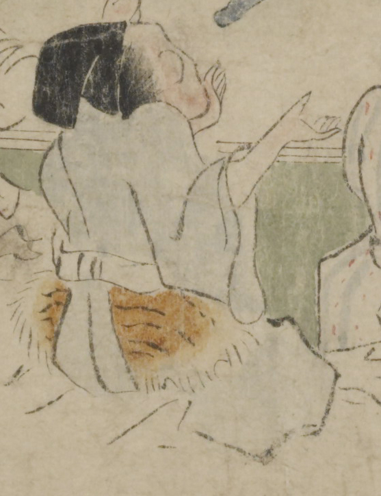

黒い烏帽子をかぶった鬼。青色の着物に白い袴を着け、腰に毛皮を巻いている。両手を上げて拍子を取ってるように見える。
著作者：坂本弥一郎徳定／出典：親書誌：U426_nichibunken_0080：伊吹山酒呑童子絵巻；イブキヤマシュテンドウジエマキ／日付：2007／資源識別子：U426_nichibunken_0080_0005_0004
Copyright (c)2010- International Research Center for Japanese Studies, Kyoto, Japan. All rights reserved.